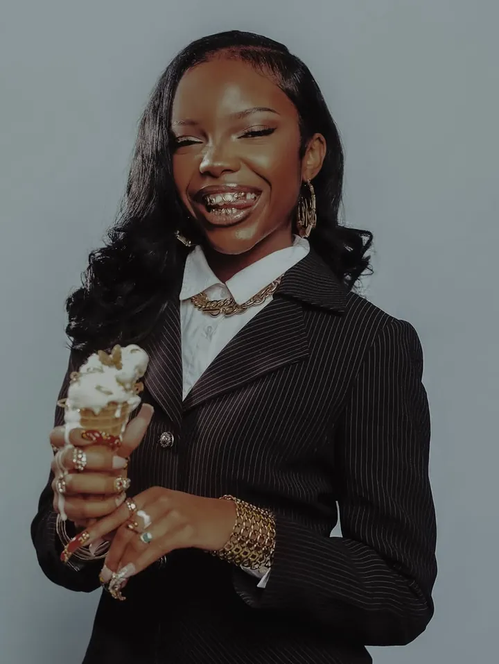

Writer · Director · Creative Director
Stories that feel like home.
Films written and directed to put a spotlight on the beauty of our community, told with honesty, warmth and soul.
Culture, captured with intention.
From Lionsgate to PepsiCo, every campaign is crafted to connect culture with an audience of over 900K supporters.
Built by a team of visionaries.
Major Myra is growing. Writers, editors, stylists and storytellers: let's create what comes next, together.
Trusted by the best clients and partners
The work speaks. Press play.
Meet the creator
What's up, I'm Myracle.
I create films that speak to the soul.
As a writer and director, I connect culture to an audience of over 900K combined supporters that I love dearly. Every story starts with the people and places that raised me.
By crafting stories that place a spotlight on the beauty of my community, I bring authenticity to campaigns that feel like home, for partners like Lionsgate, Meta and PepsiCo.
- Combined supporters
- 900K+
- Brand & festival partners
- 6
- Film degree
- B.F.A.
Let's create something that matters.
Campaigns, films and stories that feel like home. Tell me what you're making.
Work With Me
Get in touch
Tell me your story.
Brand campaigns, films, creative direction, or a seat on the team. Share a few details and I'll get back to you.
Thank you, it's on its way.
I read every message and will be in touch soon.